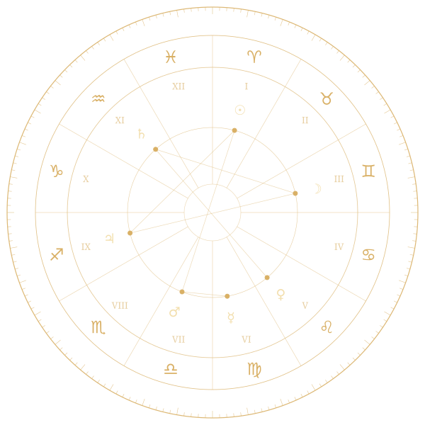

Timing del matrimonio
Los períodos más favorables para el amor y la pareja.
Astrología védica · Autoconocimiento · Evolución del alma
Astrología védica para una vida consciente y en armonía con tu alma.
Consciencia · Propósito · Equilibrio · Evolución del alma
Reserva tu consulta →
Los períodos más favorables para el amor y la pareja.
Tu propósito, dirección y oportunidades.
Tendencias futuras y decisiones conscientes.
Tu naturaleza, emociones y fortalezas.
Tus dones y cómo usar tu potencial.
Tus aprendizajes y la evolución de tu alma.
✦ Sobre mí
Soy Asia y te ayudo a comprender tu mapa astral, tus ciclos de vida, tus relaciones, tus talentos y el propósito de tu alma a través de la sabiduría de la astrología védica (Jyotish).
Mi intención es ayudarte a tomar decisiones conscientes y a comprender mejor los patrones y posibilidades de tu camino.
Conoce mi historia →✦ Consultas
Cuándo los temas de pareja y matrimonio cobran importancia.
Tu propósito, dirección y las oportunidades de tu camino.
Los próximos ciclos planetarios, desde una perspectiva consciente.
Tus fortalezas, emociones, motivaciones y patrones internos.
Tus dones naturales y cómo utilizarlos en tu vida.
Aprendizajes recurrentes y la dirección de tu crecimiento interior.
“Cuando te conoces, todo comienza a cambiar.”
La astrología védica puede ofrecerte un mapa simbólico para la reflexión, la consciencia y una dirección de vida más alineada contigo.
Reserva tu consulta →✦ Testimonios
★★★★★“Gracias a la consulta entendí mejor mi propósito y ahora tomo decisiones con más claridad y confianza.”
— María S.
★★★★★“Descubrí mi dirección y comprendí patrones que llevaba años repitiendo.”
— Ana L.
★★★★★“La consulta me ayudó a reconectar conmigo misma y reconocer mis talentos.”
— Carla R.
Tu próximo capítulo comienza con una pregunta
Reserva una consulta privada y explora lo que tu carta natal védica puede revelar sobre tu camino, relaciones, talentos y desarrollo interior.
Reserva tu consulta →